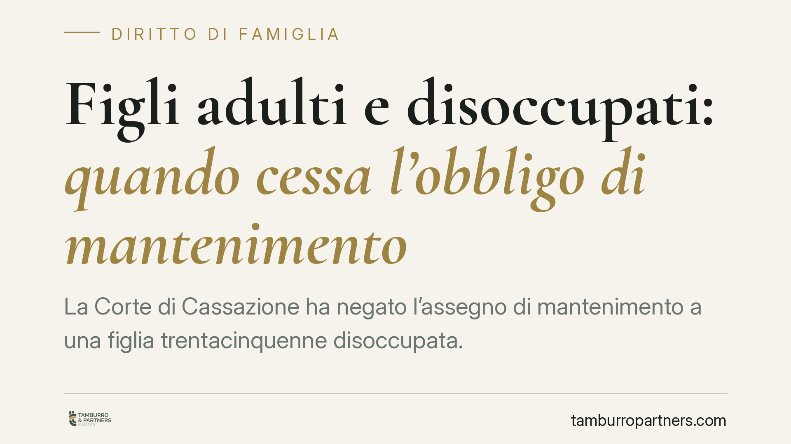

Figli adulti e disoccupati: quando cessa l'obbligo di mantenimento
La Corte di Cassazione ha negato l'assegno di mantenimento a una figlia trentacinquenne disoccupata. Superata l'età del completamento degli studi, l'obbligo dei genitori non è perpetuo: spetta al figlio provare di cercare attivamente un impiego. Una decisione che chiarisce i confini tra sostegno dovuto e inerzia non tutelabile, con conseguenze pratiche per molte famiglie.

Il caso
Un padre si vede chiedere la prosecuzione del mantenimento della figlia, trentacinquenne e priva di occupazione. Tribunale e Corte d'Appello avevano valutazioni differenti; la Cassazione interviene negando l'assegno. Il principio è netto: il dovere dei genitori non si estende indefinitamente e, superata la fase formativa, è il figlio a dover dimostrare di essersi attivato concretamente per rendersi autosufficiente.
Inquadramento normativo
Occorre distinguere due istituti spesso confusi.
Il mantenimento del figlio maggiorenne non autosufficiente trova fondamento nell'art. 337-septies c.c.: è un obbligo che accompagna il percorso di crescita e formazione del figlio verso l'indipendenza economica. Ha natura tendenzialmente temporanea e funzionale.
Gli alimenti (artt. 433, 438 e 439 c.c.) sono cosa diversa: spettano a chi versa in stato di bisogno e non è in grado di provvedere al proprio sostentamento. Hanno portata più ristretta, coprono lo stretto necessario e presuppongono un'impossibilità oggettiva, non una mera assenza di reddito.
Il passaggio rilevante è l'inversione dell'onere della prova. Le Sezioni Unite, con la sentenza n. 38596/2021, hanno affermato il principio di autoresponsabilità del figlio maggiorenne: una volta raggiunta un'età che consente, secondo l'ordinaria diligenza, il completamento del percorso formativo, non è più il genitore a dover dimostrare l'autosufficienza del figlio, ma è quest'ultimo a dover provare di aver attivamente e seriamente cercato un lavoro adeguato alla propria preparazione.
Non esiste una soglia di età fissa
È importante chiarire un punto spesso frainteso: la legge non fissa un'età anagrafica oltre la quale il mantenimento cessa automaticamente. Non ci sono i trent'anni, né i trentacinque, come limite legale.
La valutazione è caso per caso. I giudici considerano una pluralità di elementi concreti:
- il tipo di percorso di studi intrapreso e i tempi fisiologici per completarlo;
- il tempo trascorso dalla conclusione della formazione;
- le condizioni del mercato del lavoro nel settore di riferimento;
- l'eventuale rifiuto di occasioni lavorative adeguate alla preparazione acquisita;
- la concretezza delle iniziative assunte per trovare impiego (candidature, formazione aggiuntiva, disponibilità alla mobilità).
È la cosiddetta colpevole inerzia a far venire meno la tutela: non la disoccupazione in sé, ma l'inerzia non giustificata da circostanze oggettive.
Implicazioni pratiche
Per il genitore obbligato, la decisione conferma che il versamento non è a tempo indeterminato. Superata la fase formativa, può chiedere al giudice la revisione o la cessazione dell'assegno, allegando il decorso del tempo e l'assenza di un serio impegno del figlio nella ricerca di occupazione.
Per il figlio adulto, cambia la posizione processuale: non basta affermare di essere disoccupato. Occorre documentare l'effettiva ricerca di lavoro. In mancanza, la richiesta di mantenimento è destinata a cadere, salvo residuare, ove ne ricorrano i presupposti, il diverso e più limitato diritto agli alimenti in caso di reale stato di bisogno.
Cosa fare in concreto
- Non interrompere unilateralmente i versamenti. La sospensione di fatto può esporre a conseguenze: chiedere sempre la revisione giudiziale della misura.
- Raccogliere documentazione. Il genitore conservi prova dell'età del figlio, del percorso formativo concluso e del tempo trascorso; il figlio documenti candidature, colloqui, corsi di formazione e disponibilità lavorativa.
- Valutare la natura della pretesa. Verificare se si discute di mantenimento (art. 337-septies c.c.) o di alimenti (artt. 433 ss. c.c.): i presupposti e le prove richieste sono differenti.
- Agire tempestivamente in sede di revisione. La modifica delle condizioni va chiesta appena mutano i presupposti; attendere troppo indebolisce la posizione.
- Richiedere una valutazione preliminare della propria situazione prima di avviare o resistere a un giudizio, così da impostare correttamente oneri probatori e strategia.
Conclusioni
La pronuncia si inserisce in una linea interpretativa che valorizza la responsabilità individuale del figlio adulto. Il sostegno familiare resta un valore, ma non diventa una rendita: la tutela accompagna chi si impegna a rendersi autonomo, non chi rinuncia a farlo.
---
*Contributo informativo a cura di Tamburro & Partners - Avv. Giuseppe Tamburro. Non costituisce parere legale.*
Ogni famiglia ha il suo equilibrio.
Separazione, divorzio, affidamento, assegno: se vuoi un confronto riservato su una specifica situazione, scrivi allo studio. Ti rispondiamo entro un giorno lavorativo.